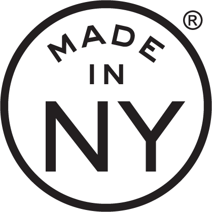
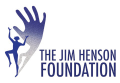

January 27 - February 19 2022
Dixon Place
161A Chrystie St, New York, NY 10002
Tickets here
Written by Jaime Sunwoo
Directed by Karim Muasher and Jaime Sunwoo
Music and Lyrics by Matt Chilton
Lighting Design by Sarah Lurie
Projection Design by Cinthia Chen
Performed by Juella Baltonado, Nathaniel Basch-Gould, Monica Goff, Grace Hwoang, Eunji Lim, Adrianna Mateo, Vanessa Rappa, and Sarah Shin
Specially Processed American Me by Jaime Sunwoo is a surreal autobiographical performance using SPAM, the canned meat, as a portal into her Asian American upbringing and her family's experiences of the Korean War. It investigates SPAM's legacy in the military, its significance in the Asia-Pacific, and its influence on Asian cuisine through music, shadowplay, and cooking. Oscillating wildly between absurd humor and sober tragedy, Specially Processed American Me is a thought-provoking exploration of one of America's most misunderstood foods.
In addition to performances, Specially Processed American Me holds food history and storytelling workshops over a communal SPAM meal. To learn more, see our Workshops and Performances pages and follow @speciallyprocessed on Facebook and Instagram.
Specially Processed American Me was developed through BRIClab, HB Studio Rehearsal Space Residency, BAX Upstart Program, Barn Arts Residency, Leviathan Lab, and FailSafe with support from the Queens Council on the Arts' Artist Commissioning Program, Ms. Foundation for Women in association with Asian Women Giving Circle, the NYC Women's Fund for Media, Music and Theatre by the City of New York Mayor's Office of Media and Entertainment in association with The New York Foundation for the Arts, Brooklyn Arts Fund, MVRP Foundation, The Laundromat Project, and The Jim Henson Foundation.
 
Jaime Sunwoo is a Korean American multidisciplinary artist from Brooklyn, New York working in visual art, theater, film, and public art. Her works connect personal narratives to global histories through surreal storytelling. She studied art at Yale University, and was a fellow for Ping Chong and Company and The Laundromat Project. Her work has been presented at Park Avenue Armory, Abrons Art Center, BAX, JACK, The Tank, Flux Factory, Art in Odd Places, Gallery Korea at KCCNY, Open Source Gallery, and Westbeth Gallery. She has led workshops, given lectures, and joined panel discussions at The Metropolitan Museum of Art, Museum of Food and Drink, Yale University, New York University, The Wang Center at Stony Brook University, and Mills College. More at jaimesunwoo.com / @jaimesunwoo
Free Rein Projects, founded by Jaime Sunwoo in 2014, produces multidisciplinary performance projects in theater, visual art, film, and public art. Free Rein Projects has developed Specially Processed American Me through BRIClab, HB Studio Rehearsal Space Residency, BAX Upstart Program, Barn Arts Residency, Leviathan Lab, and FailSafe with support from the Queens Council on the Arts' Artist Commissioning Program, Ms. Foundation for Women in association with Asian Women Giving Circle, the NYC Women's Fund for Media, Music and Theatre by the City of New York Mayor's Office of Media and Entertainment in association with The New York Foundation for the Arts, Brooklyn Arts Fund, MVRP Foundation, The Laundromat Project, and The Jim Henson Foundation.
Ping Chong and Company (PCC) creates theater and art that reveal beauty, invention, precision, and a commitment to social justice. Founded in New York City in 1975 by leading theatrical innovator and National Medal of Arts recipient Ping Chong, the company engages multigenerational interdisciplinary artists to build on and expand a prolific catalogue—at the root of which is Ping Chong and his singular and visionary body of work. The company’s work centers innovation, collaboration, community engagement, and amplifies underrepresented voices. Across nearly five decades, the New York City-based company has now created over 100 original theater productions, ranging from intimate interview-based works to large-scale multidisciplinary projects featuring puppets, performers, and full sound and projection scores. Reaching audiences throughout New York, the United States, and the world, PCC transcends boundaries, exploring interconnectedness of cultures and how intersectional identities are addressed in society. The company’s work often seeks to excavate and question dominant historical narratives. www.pingchong.org / @pingchongco
A bastion for visionary artists since 1986, Dixon Place is an award-winning non-profit institution dedicated to supporting the development and presentation of original works of theatre, dance, puppetry, and literature. With an abiding commitment to racial justice and gender equity, diversity is a mandate and artist remuneration a priority. In a professional, compassionate environment, artists are inspired and encouraged to take risks, generate new ideas, and execute new practices; and adventurous audiences enhance their process. Many artists such as Blue Man Group, Lisa Kron, John Leguizamo, and Deb Margolin began their careers at DP. Over the years, established artists have appeared such as Justin Vivian Bond, Kate Clinton, Alan Cumming, Karen Finley, Niles Ford, James Lecesne, Taylor Mac, Terry McMillan, Vernon Reid, Wallace Shawn, Martha Wainwright, and BD Wong. DP provides incomparable opportunities for artists of all stripes and callings, and endows audiences with accessible, memorable, enriching cultural experiences. An essential home for artists and their new work, Dixon Place has successfully supported artistic achievement for 35 years, contributing significantly to NYC’s cultural landscape.